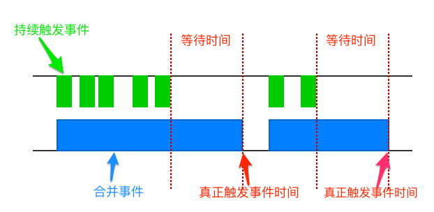
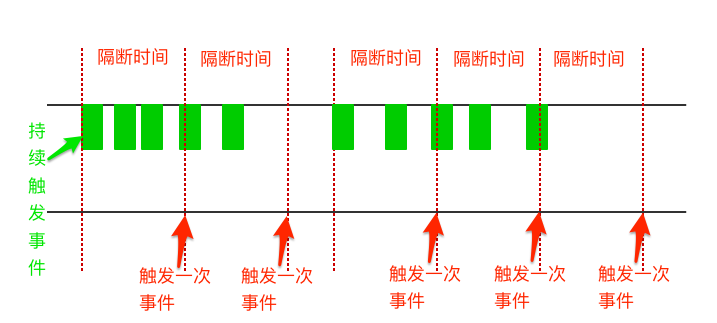

函数节流与防抖
窗口的resize、scroll，输入框内容校验等操作时，如果这些操作处理函数较为复杂或页面频繁重渲染等操作时，如果事件触发的频率无限制，会加重浏览器的负担，导致用户体验非常糟糕。此时我们可以采用debounce（防抖）和throttle（节流）的方式来减少触发的频率，同时又不影响实际效果。
防抖（debounce）
- debounce（防抖），简单来说就是防止抖动。 
从上图中我们可以看到，当持续触发事件时，debounce会合并事件且不会去触发事件，当一定时间内没有触发再这个事件时，才真正去触发事件
- 场景：将用户输入的字符串转换成大写。此时，每一次的用户输入都触发转换大写函数，造成了浪费，于是设置两次输入之间的时间间隔大于800ms时（用户结束输入时），再执行将字符串转换成大写函数。
function debounce(fn, delay) {
var ctx;
var args;
var timer = null;
var later = function () {
// 通过apply 方式传递参数
fn.apply(ctx, args);
// 当事件真正执行后，清空定时器
timer = null;
};
return function (t) {
ctx = this;
args = arguments;
// 当持续触发事件时，若发现事件触发的定时器已设置时，则清除之前的定时器
console.log(timer)
console.log(args)
if (timer) {
clearTimeout(timer);
timer = null;
}
// 重新设置事件触发的定时器
timer = setTimeout(later, delay);
};
}
function fn (t){
console.log(t)
$('#uppercase').val($('#letters').val().toUpperCase())
}
var _debounce = debounce(fn,800)
$('#letters').on('input',function(){
_debounce(11)
})
节流（throttle）
节流：当持续触发事件时，保证间隔时间触发一次事件。 
场景：滚动的过程中间隔执行，例如滚动加载图片效果，不可能等到滚动结束才执行加载函数数吧，
function throtte(fn,wait,maxTimelong){
var startTime = (new Date()).getTime();
var timer = null
var me;
var arg;
function delay () {
fn.apply(me,arg);
timer = null;
}
return function(){
me = this
if(timer !== null) clearTimeout(timer);
var curTime = (new Date()).getTime();
arg = arguments;
if (curTime - startTime > maxTimelong ) {
delay ();
startTime = curTime
} else {
timer = setTimeout(delay, wait)
}
}
}
function handle() {
console.log(Math.random());
}
var _throtte = throtte(handle,800,800)
$('.container').on('scroll',_throtte)
总结
根据实际业务场景，合理的利用debounce（防抖）和throttle（节流）可以优化性能和提高用户体验。两者间的核心区别就在于持续触发事件时，前者合并事件并在最后时间去触发事件，而后者则是隔间时间触发一次～